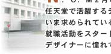
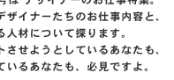
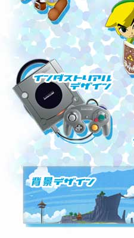
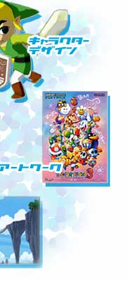

中道 幸呼
［開発第一部 開発課］
畠山 英男
［開発第二部 開発課］
山本 伸樹
［企画開発部 企画開発課］
丸山 和宏
［総合開発本部 開発部 開発課］
四方 宏昌
［情報開発本部 制作部 制作課］
松永 浩志
［情報開発本部 制作部 制作課］
飯田 季
［情報開発本部 情報開発管理部 情報開発管理課］
採用担当者インタビュー
杉山 直
［情報開発本部 制作部 制作課 課長代理 企画担当］
高橋 伸也
［情報開発本部 制作部 制作課 係長 デザイン担当］
人事部長インタビュー
竹村 薫
［総務本部 人事部 部長］
中村 慶子
［総務本部 人事部 人事課］
●●●●●
JUMP >>
2月号のサイトマップへ
●●●●●
BACK >>
N.O.Mのバックナンバーページへ